STEP 06: 데이터 시각화 part3#
이번 실습에서는 메달 세부 분석 페이지를 구축해보겠습니다.
6.1 국가별 메달 분석 테이블 만들기#
메달 세부 분석버튼을 클릭해서메달 세부 분석페이지로 이동합니다. 캔버스를 한 번 클릭한 뒤 붙여넣기(Ctrl + V)를 실행하여 앞서 복사해두었던 카드 시각적 개체를 붙여넣어 줍니다. 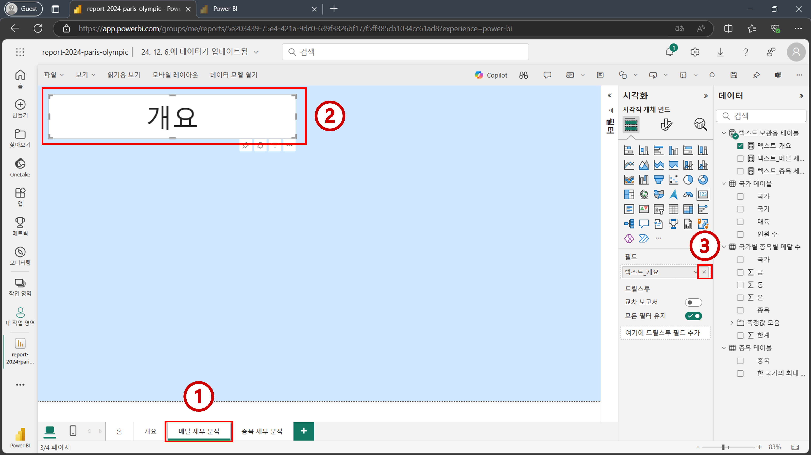카드 시각적 개체의
필드에 들어가 있던텍스트_개요를 삭제하고,텍스트_메달 세부 분석필드를 드래그 앤 드롭하여필드에 추가합니다. 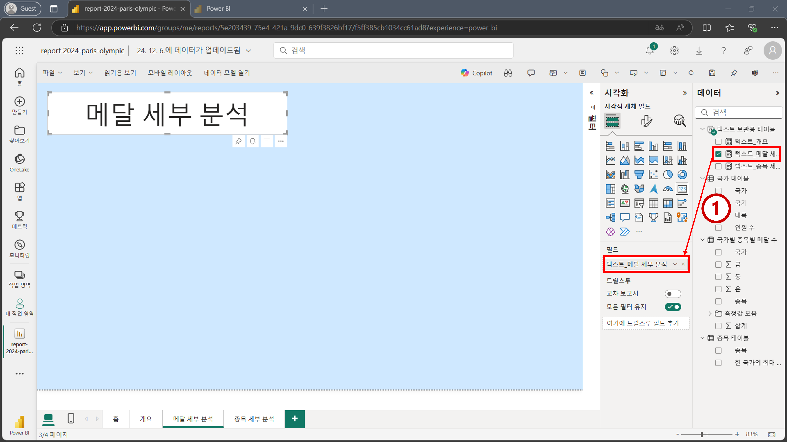비어 있는 캔버스를 클릭한 뒤, 아래 이미지의 1번을 참고하여 테이블 시각적 개체를 캔버스에 추가합니다. 그리고 적절한 크기로 조절하고 적절한 위치로 배치합니다. 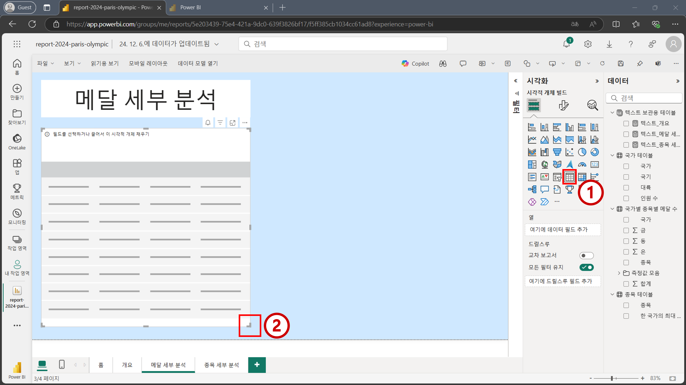
아래 이미지를 참고하여 테이블 시각적 개체에 필요한 필드들을 추가합니다. 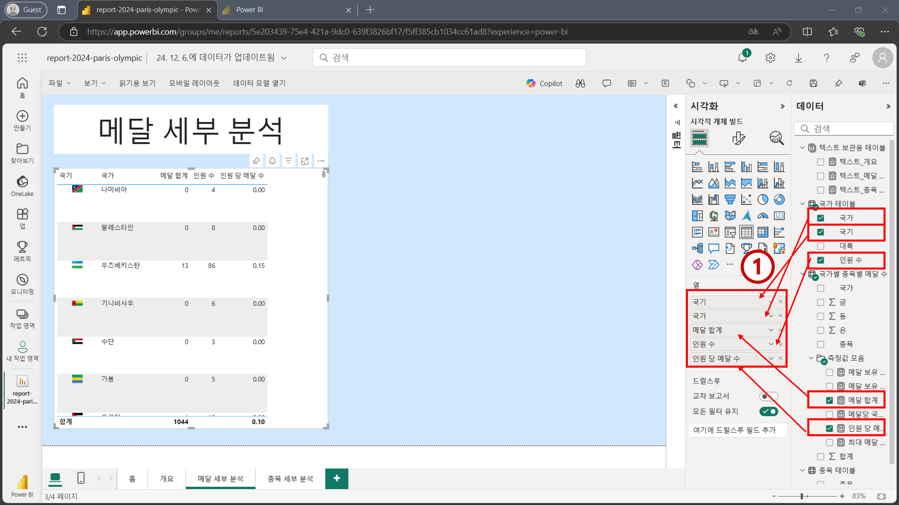
국기필드에 시각화된 국기의 크기를 조절하기 위해 아래 이미지를 참고하여이미지 크기메뉴로 이동합니다. 그리고 나서높이와너비를 각각22로 편집합니다. 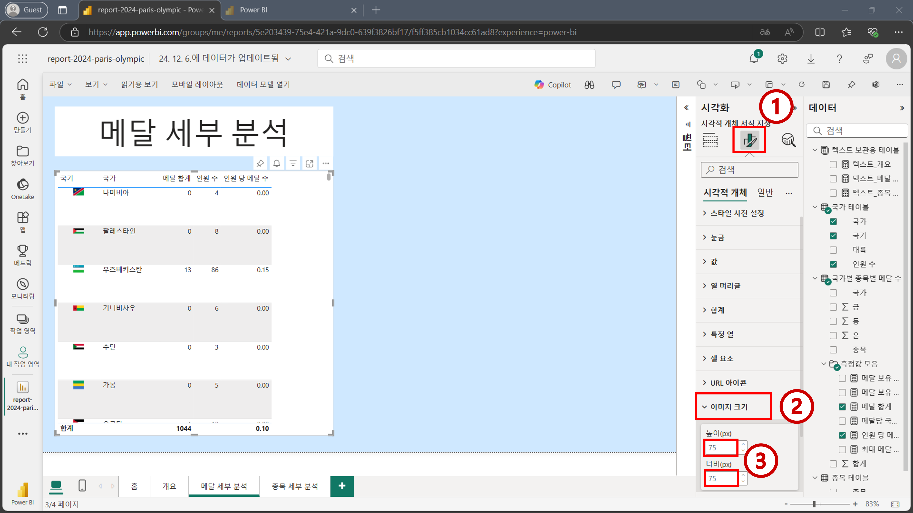국기필드의 크기는 적절하게 조절되었습니다. 허나 테이블 시각적 개체 내에 있는 값들과 열 이름이 너무 작습니다. 폰트 사이즈를 편집하기 위해값메뉴로 이동하여 폰트 사이즈를15로 변경합니다. 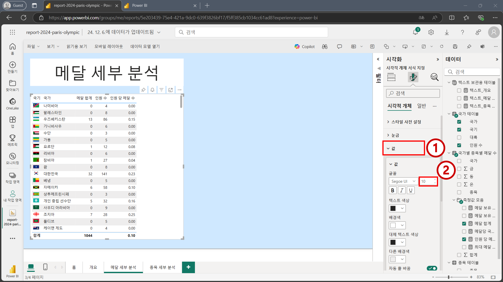마찬가지로
열 머리글메뉴로 이동하여 폰트 사이즈를15로 변경합니다. 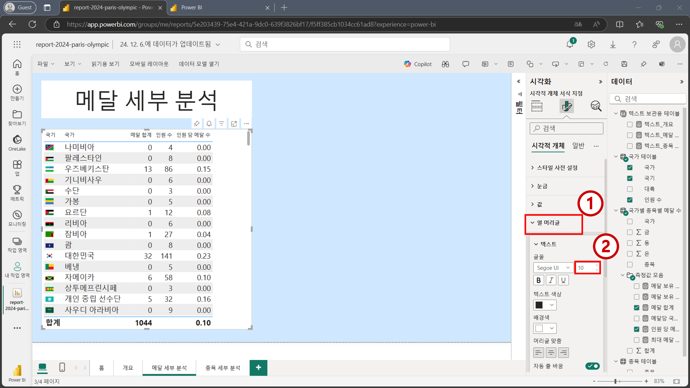테이블 시각적 개체의 폰트 사이즈는 적절하게 변경되었습니다. 허나
인원 수열에 합계가 표시되지 않고 있습니다.인원 수필드를 클릭하여 집계 방법을합계로 변경합니다. 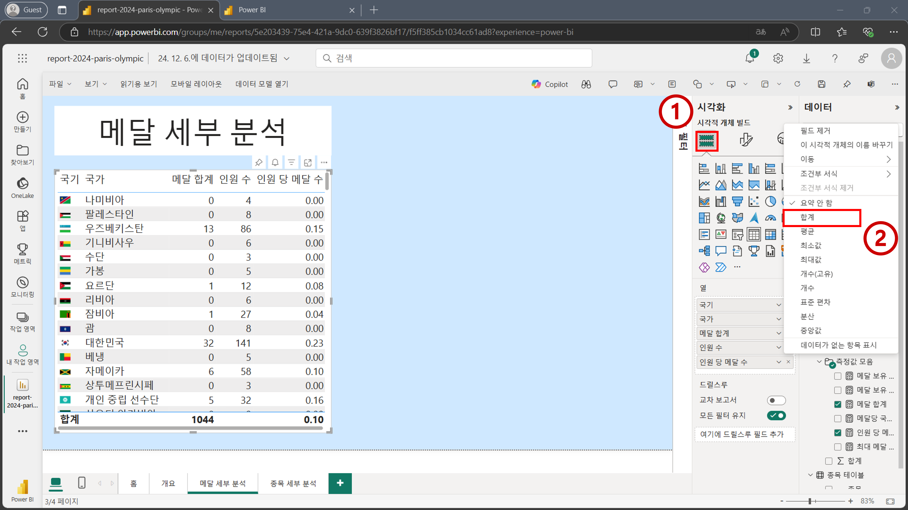합계로 변경 되면서 필드명이합계 인원 수개로 변했습니다. 해당 필드명을 더블 클릭하여 다시인원 수로 수정합니다. 테이블 시각적 개체에 있는메달 합계및합계 인원 수개열에 해당하는 합계에 천 단위 구분자가 있으면 가독성이 더 좋을것 같습니다. 또한인원 당 메달 수또한 소수점 3째자리 까지 표시하고자 합니다. 서식을 변경하기 위해 의미 체계 모델을 편집하고 있었던 탭으로 이동합니다. 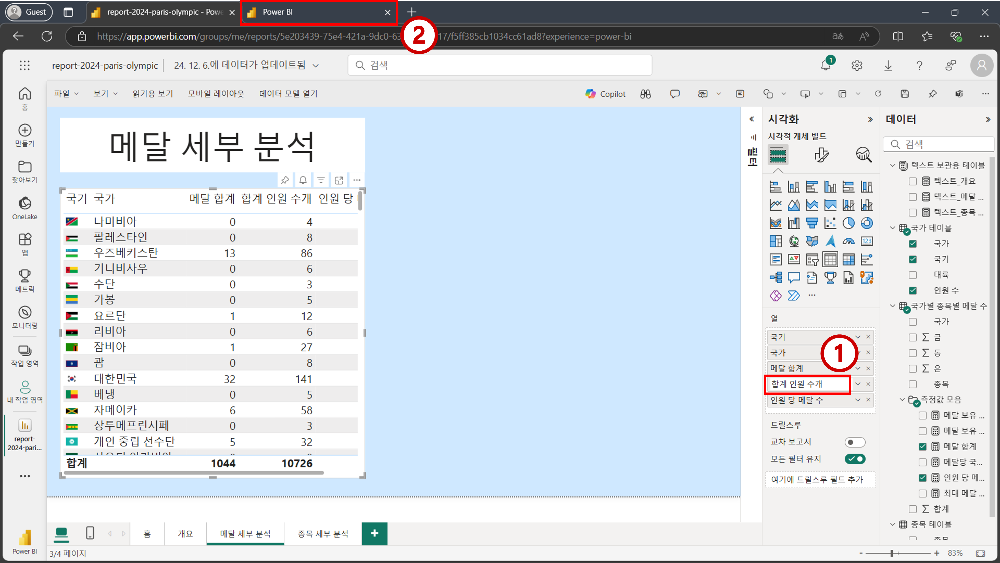'국가 테이블'[인원 수]필드와'국가별 종목별 메달 수'[메달 합계]필드를 동시 선택합니다. 그리고속성패널에서천단위 구분 기호를 클릭하여 활성화 시킵니다. 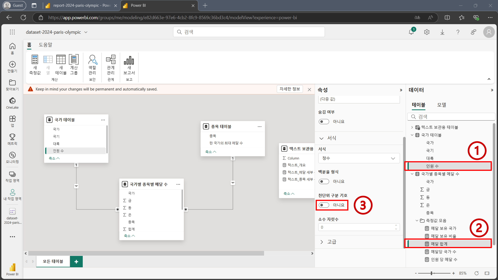'국가별 종목별 메달 수'[인원 당 메달 수]를 클릭합니다.속성패널에서소수 자릿수란에3을 입력하고 비어 있는 공간을 한 번 클릭합니다. 그리고 나서 다시 보고서 편집을 하던 탭으로 돌아옵니다. 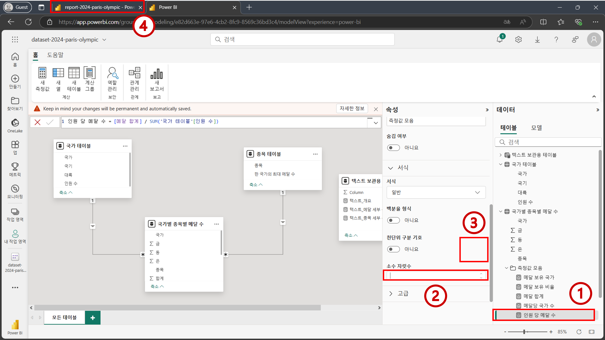원하던 서식 변경이 다 이뤄진 것을 확인할 수 있습니다. 테이블 시각적 개체에 있는
인원 수열 이름을 클릭하면 내림차순, 한번 더 클릭하면 오름차순으로 정렬할 수 있습니다. 여러 번 클릭해 보면서 내림차순으로 설정을 해둡니다. 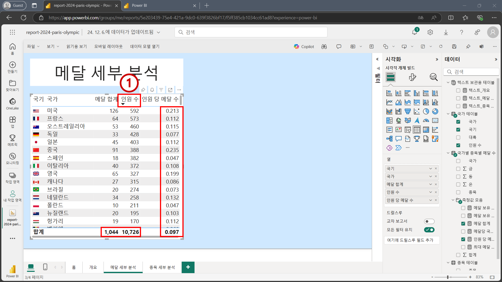다음으로는
인원 당 메달 수열에 있는 값을 더 직관적으로 이해하기 위해 아래 이미지를 참고하여조건부 서식>배경색으로 이동합니다. 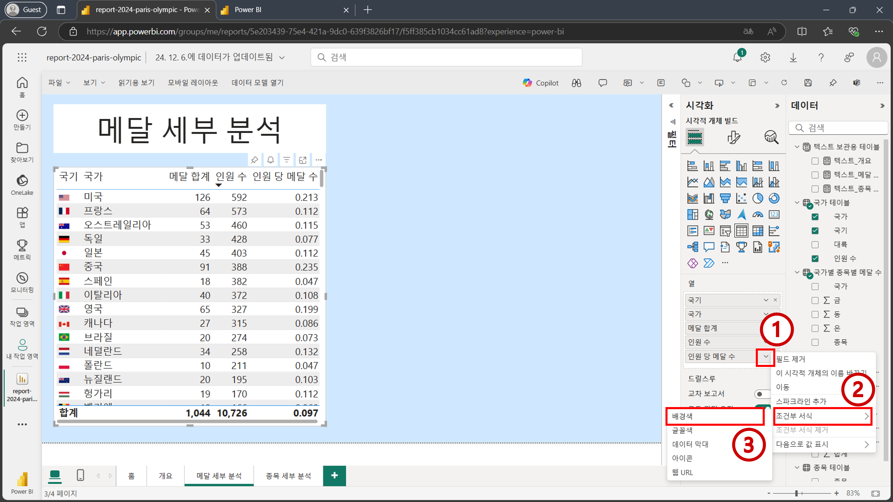아래 이미지를 참고하여
최소값과최대값의 색상을 적절한 색으로 편집합니다. 추천하는 값은최소값같은 경우는#FFFB1B이며,최대값은FF0000입니다. 해당 컬러 코드를다른 색(2번) 버튼을 누르면 열리는 창에서헥스란에 입력하면 됩니다. 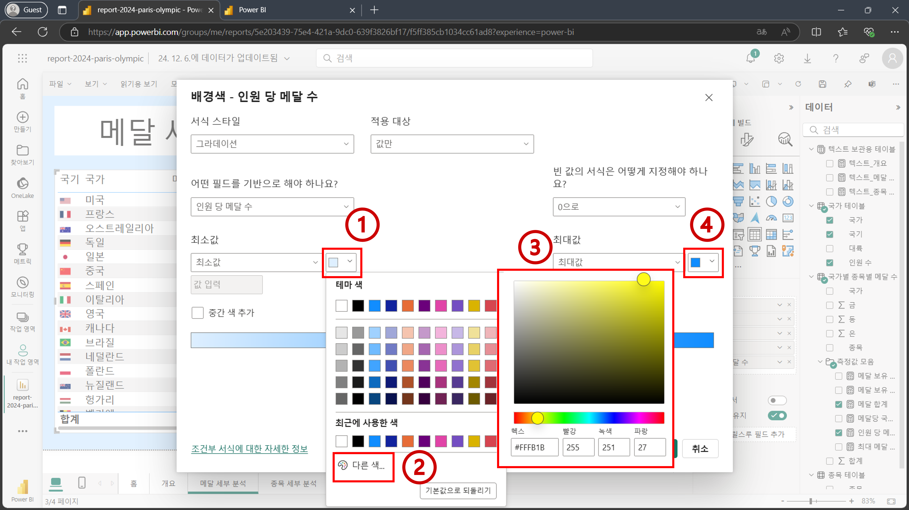색 설정이 완료된 후
확인을 누릅니다. 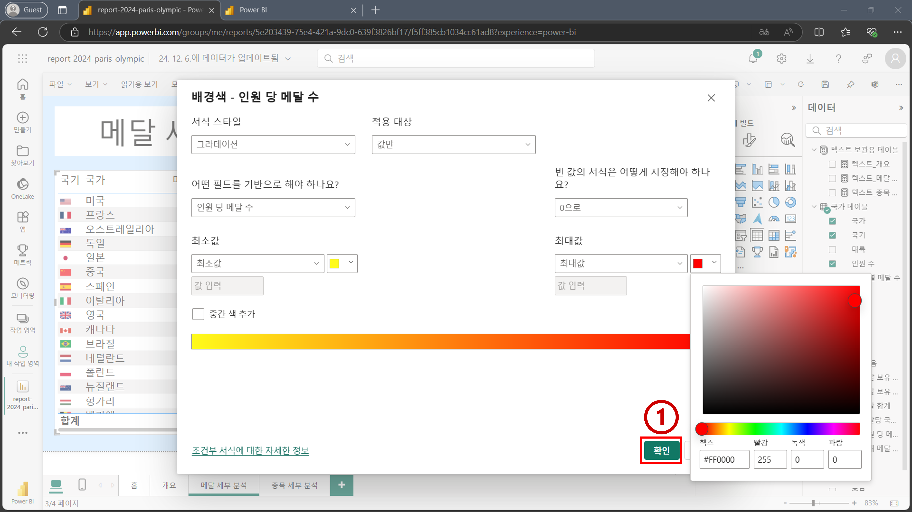아래 이미지 처럼
인원 당 메달 수열에 값에 따른 색이 배경색으로 들어간 것을 확인할 수 있습니다. 테이블 시각적 개체를 살펴보며 대한민국의 특징을 분석해봅니다. 대한민국은 올림픽 참가 인원 수가 100명 이상인 국가 중에서인원 당 메달 수, 즉 메달 획득의 효율이 2번째로 가장 좋은 것을 확인하실 수 있습니다. 새로운 테이블을 추가하기 위해 비어 있는 공간을 한 번 클릭한 후, 아래 이미지를 참고해 테이블 시각적 개체를 추가합니다. 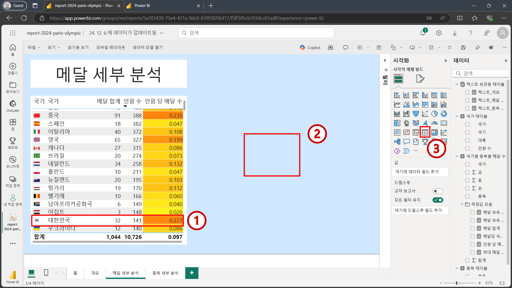
6.2 대륙별 메달 보유 국가 비율 시각화#
테이블 시각적 개체가 추가되면 아래 이미지를 참고하여 적절한 필드들을 추가합니다. 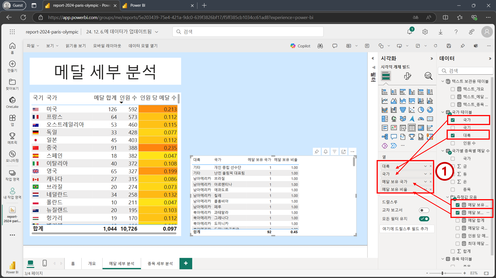
추가된
'국가 테이블'[국가]필드가 정상적으로 집계가 되지 않고 있기 때문에국가필드의 집계 방법을개수(고유)로 편집합니다. 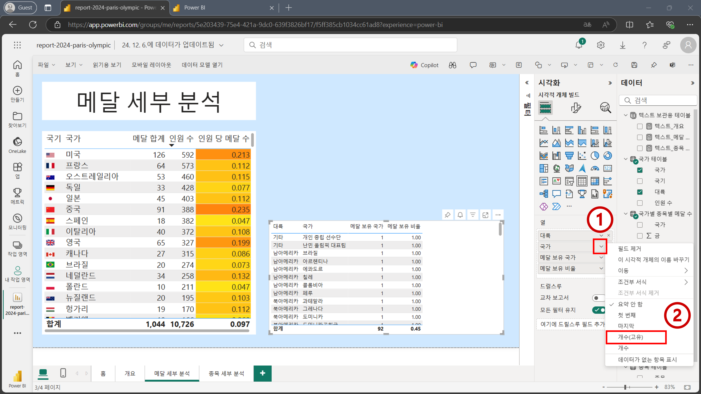테이블 시각적 개체의 폰트 사이즈를 아래 이미지를 참고하여 편집합니다. 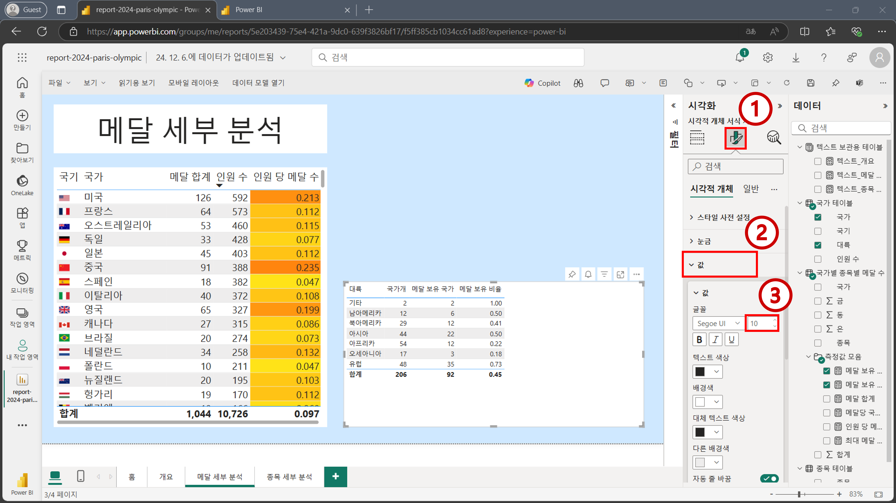
열 머리글의 폰트 사이즈 또한 아래 이미지 참고하여 업데이트를 한 후, 백분율 서식을 변경하기 위해 데이터 모델링 탭으로 다시 이동합니다. 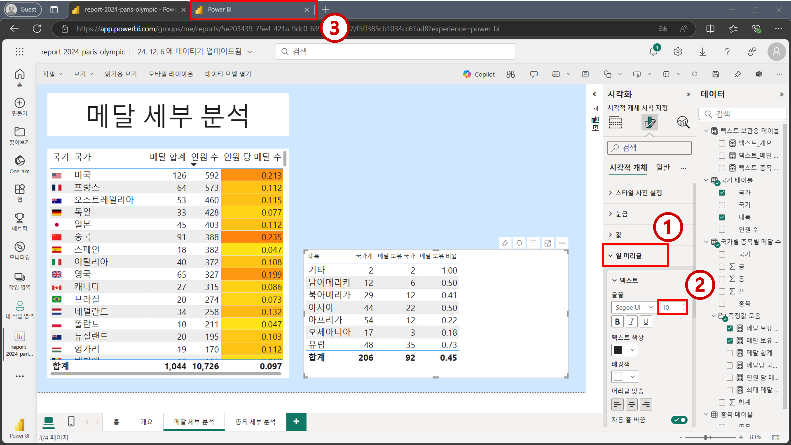
'국가별 종목별 메달 수'[메달 보유 비율]필드를 클릭한 후속성패널에서백분율 형식을 클릭하여 활성화 합니다. 그리고 다시 보고서 편집 탭으로 이동합니다. 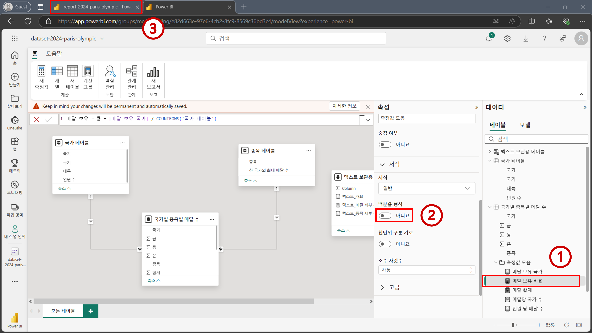메달 보유 비율열의 백분율 서식이 잘 나오는 것을 확인할 수 있습니다.국가개열을 클릭하여 테이블을 내림차순 정렬합니다. 그리고 비어 있는 캔버스를 클릭한 뒤 아래 이미지를 참고하여 슬라이서 시각적 개체를 추가합니다. 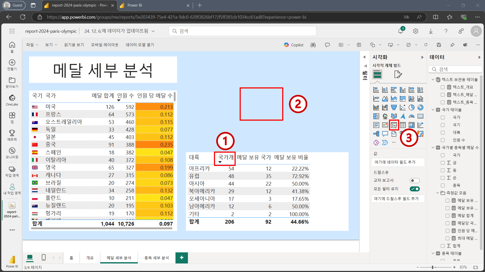
6.3 슬라이서 추가하기#
슬라이서 시각적 개체는 데이터들을 필터링 해서 볼 때 사용합니다 추가된 슬라이서 개체를 선택하고 필드에는
'국가 테이블'[대륙]필드를 드래그 앤 드롭하여 추가합니다. 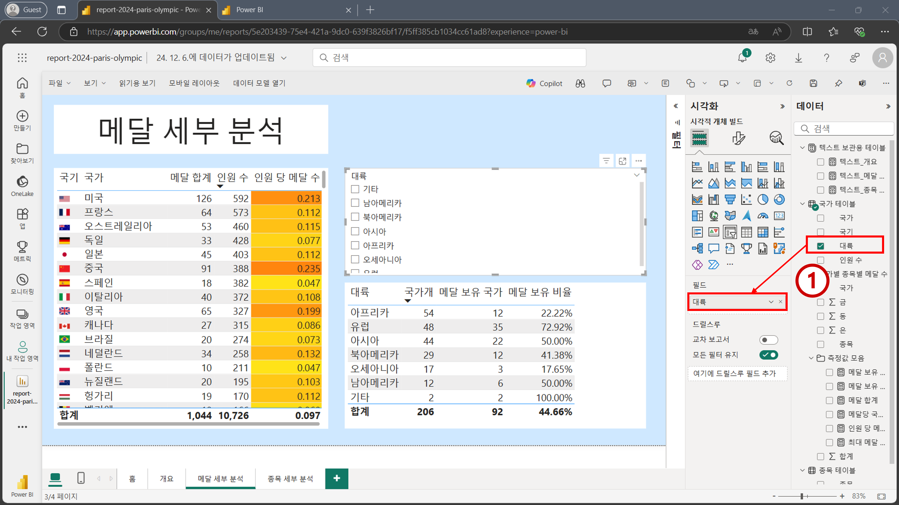슬라이서 설정을타일로 변경합니다. 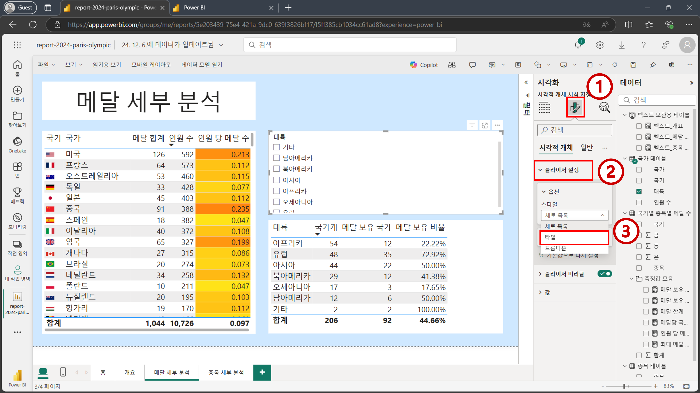슬라이서를 눌러 보면서 필터링된 데이터들이 시각화된 결과를 확인해봅니다. 확인이 완료되면 종목 세부 분석 페이지 구축을 위한 준비를 합니다.
메달 세부 분석카드 시각적 개체를 클릭한 뒤 복사(Ctrl + C) 합니다. 그리고종복 세부 분석버튼을 눌러 해당 페이지로 이동합니다. 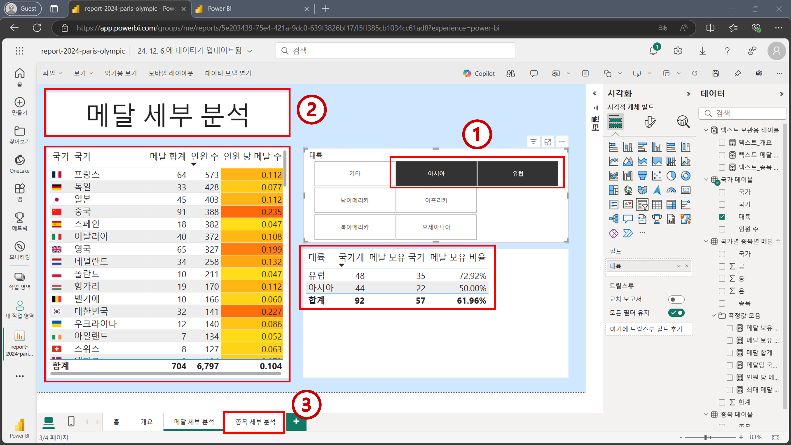
축하합니다. 데이터 시각화 세번째 파트를 모두 완료하셨습니다.